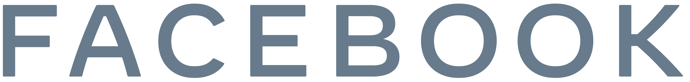
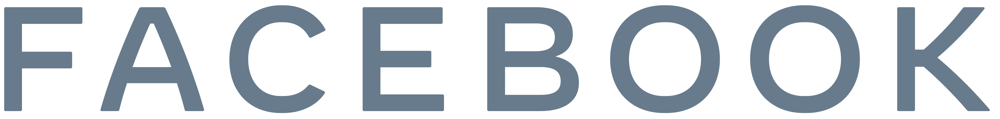
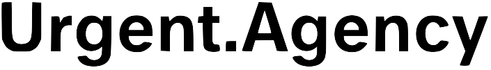
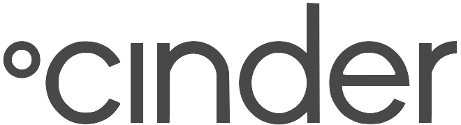
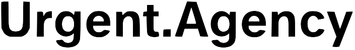
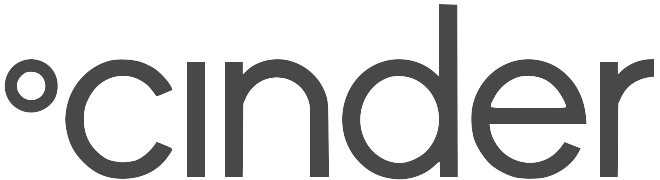

Nice to see you!
I'm a designer and coder who builds research-validated experiences and tools for global communities. Currently leading UX Engineering at TED.
Currently learning about: JS motion libraries, carbon steel pans, zines, decolonizing design, food styling and magnets. Enjoy these javascript magnets I made!
 
   
 A collection of recent web experiences I've designed and coded, for work and play
Music Visualizers 🎵
a playground of musical sketches made with p5.js
Glimpses of 2020 📸
a reflective photo journal of fleeting moments of 2020
Stanford Mobility 🚙
a set of research on the future of automobility with Ford
Healthy Internet Project 💻
a landing page for a TED-incubated team
Personal Portfolio v.1
the predecessor to this site
In-depth case studies and project summaries of recent UX projects
Lead Designer and User Researcher
A TED initiative to help create a global community that can collectively make the internet a healthier place!
UX Engineer
A usable and delightful tool that has enabled thousands of community events hosts to create 17,000+ events
Brand Designer and Developer
A cohesive brand identity for a TED-incubated team
Digital Design and Brand Strategy
Wide-ranging brand and research projects for mostly Danish clients of a Copenhagen-based studio
These are the older projects and collaborations that didn't make it into full case studies.
They include academic research projects, experiments with OpenGL, metal-working, and leading cross functional teams.

Malt
Lathed a portable milkshake machine from solid Aluminum and have used it hundreds of times.

FoodInno
Directed and hosted a Food Waste conference at Stanford

Family Room
Designed and tested a tool to let family's capture intergenerational stories through audio

Computer Music Experiences
Worked in Ge Wang's sublime aesthetics course to create interactive, audio-visual experiences that speak to people.

stanFORD Mobility Project
Led a team between Dr. Barbara Karanian and the Ford Innovation Center to research the future of multimodal, urban transportation.

Autonomous robot
Built an optimized robot to solve a pre-designed maze with an electrically and mechanically efficient system.

The Piqo Wallets
Created and currently use 30 minimalist wallets with exploratory materials from wood to spandex.

Shun-Inspired Flashlight
Created a flashlight inspired by the brand of the over 100 year-old Japanese Chef Knife company, Shun.